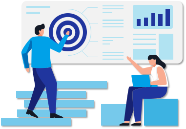

- 00 开篇词：了解面试“潜规则”，从海选中脱颖而出.md.html
- 01 设计一份吸引面试官的简历.md.html
- 02 读懂职位 JD，精准投递简历.md.html
- 03 把握投递简历的黄金时间段.md.html
- 04 做好充分的准备去面试.md.html
- 05 把握面试时的关键点.md.html
- 06 捕捉 HR 微表情，做出应对策略.md.html
- 07 巧妙推销自己的 3 个技巧.md.html
- 08 认清自身实力，明确求职方向.md.html
- 09 判断公司背景，做出合理选择.md.html
- 10 了解行业薪资，清晰找准定位.md.html
- 11 目标明确，阐明沟通.md.html
- 12 工作交接流程福利衔接.md.html
- 捐赠
12 工作交接流程福利衔接
你好，我是你的面试课老师杨宇堃，欢迎进入第 12 课时的内容“工作交接流程 & 福利衔接”。
工作交接流程
如何不伤和气的提出辞呈
终于拿到了自己心仪公司的 Offer 了，可能有很多小伙伴又开始发愁了：如何与领导顺利提出辞呈，又不伤和气呢？这个时候一定要做好最坏的打算，你要明白，心软拖着不说会更伤害自己与前公司的关系，不如直截了当、当机立断。 一般提出离职的方式分为两种：
通过邮件的形式提出辞呈；
直接找直属 leader 沟通。 具体采用哪种方式，可根据自己的个性来判断，比如不太擅长沟通、偏内向的可以通过邮件的方式；如果已经想好了怎么和上级沟通，也可以直接找 leader 阐明心意。那在写邮件或直接沟通时需要注意哪些呢？  首先，可以先表达出对公司和领导在工作中的指导和帮助的感激，以及这段时间在公司的工作和成长的开心，同时说明一下做出辞职的决定对自己来说是多么难的一次选择。相信这样的表达可以让领导对你有个不错的印象。 其次，不论你的离职原因是不满意薪资、不适应团队的管理风格还是发展空间到达了上限等，都不要在这里抱怨出来，因为每个公司的 leader 都清楚公司里的问题，与其这样，不如直接告诉 leader，辞职的原因是希望可以有更好的发展，或者是让自己有更好的学习成长的空间。相信你的决心加上这样的理由，leader 一定会领会里面的意思。
如果这时 leader 突然问：找到下家了么？该怎么回答？建议这样委婉地回答：手里有好几个 Offer，还没确定好去哪家…… 最不建议的离职理由：经常会有小伙伴为了避免双方尴尬，会选择“家人生病需要较长的时间照顾”、“家人要求我回老家工作”等类似这样的理由，如果是真实的当然不会有问题，如果是虚构的，以后万一被发现，则会给前公司留下一个不诚信的印象，以后再相见时会更尴尬。 当然也有小伙伴提出离职是为了通过拿到的 Offer 要求涨薪，这样的“小聪明”玩不好可能就把自己“玩”进去了，不但在拿到 Offer 的公司名声坏了，也不会被现在的公司重用的。 最后，可以和前司表示一下，自己一定会负责任地把手里的工作交接清楚，站好最后一班岗，这样也可以给前司 leader 留下一个让人踏实的印象。毕竟你的面试背调还在人家手里，总不希望闹得不可开交，拿不到一个好的背调反馈吧。
合理安排交接工作
一般来说，如果你是一位已经转正的全职员工，那么交接的时间为一个月，所以公司也会要求你在这一个月里正常工作，那么，如何清晰地在这一个月里合理安排交接工作呢？
先和直属 leader 协商找到一个靠谱的工作交接人；
把自己以往的项目文档整理好，分类发给交接人；
如果你手里还有未结束的项目，可以带着交接人熟悉一下，一起对这个项目做收尾工作；
通知同事或者项目对接人自己已经离职，接下来的项目由被交接人负责；
空出两周的时间，协助交接人熟悉你手里的工作内容，在旁做好支持工作。
如果新的公司期望你能尽快入职的话，多数情况下会担心你拒绝入职，此时建议你诚恳地向新公司解释，并和新公司同步交接工作的进度。 交接文档有以下注意事项，比如：
清晰的文档归类，发现问题可以马上与你沟通；
尽可能将相关的文档都涉及到，让你的交接文档更容易查找；
记得文档转出时抄送给领导，这个很重要，一定要记得； 我相信这样的交接流程不会让自己手忙脚乱，也可以给前司留下不错的印象。 离职最后一天走的时候，记得和同事们一一打招呼，感谢大家以往的照顾和帮助，以后要常保持联系。更重要的一点是，一定要拿到“离职证明”文件或“解除 / 终止劳动合同报告书”。

福利衔接
交接工作都做完了，很多小伙伴会问：我的社保、公积金怎么办？下面来讲讲 3 种常用的福利交接事项。
社保公积金
各个公司的社保、公积金都是以每个月的 15 日作为分界点，如果你是在 15 号前入职的新公司，那么就会帮你交当月的社保和公积金，如果你是在 15 号后从前公司离职，社保、公积金会由前公司承担。当然也会有特殊情况，要看人才局的具体安排。 如果你正好是 15 号前离职，中间休息了一段时间，15 号后入职新公司的，可能需要你自己找第三方保险代缴公司自行缴纳社保公积金了。

年假
通常，公司会按照你出勤的月份帮你做年假的换算，然后与你协商安排延后几天离职，或结算成工资，或者按照公司的规定有其他操作。
工作居住证
如果在前司有工作居住证的话，需要问问新公司是否可以接收，如果可以当然就直接转出，如果不可以，需要问问是否有第三方机构接收。
 OK，这门课到这里就结束啦，希望这门课可以帮助你找到心仪的工作。感谢你的收听~
OK，这门课到这里就结束啦，希望这门课可以帮助你找到心仪的工作。感谢你的收听~
© 2019 - 2023 Liangliang Lee. Powered by gin and hexo-theme-book.